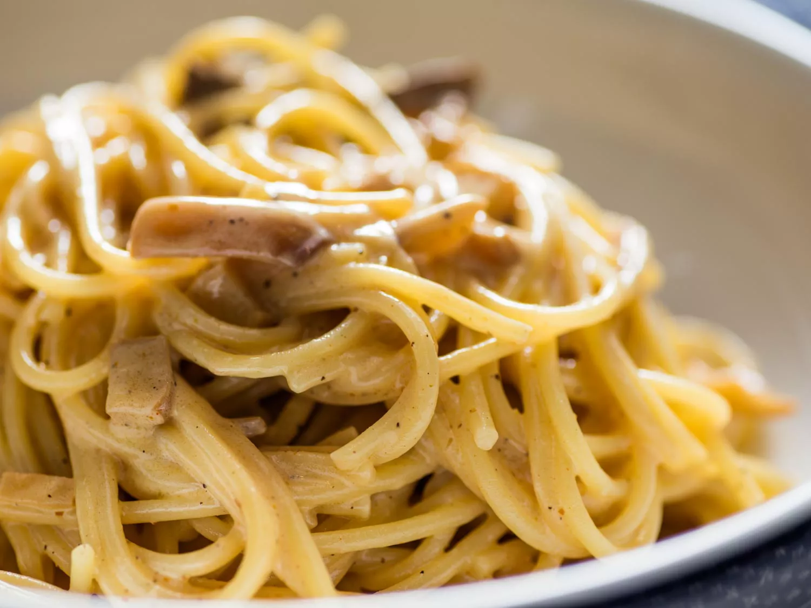

Smoky Carbonara

Description
Spaghetti Carbonara is named for the coal miner. And yet, there is nothing smoky about the original version—guanciale and pancetta are both unsmoked cuts of pork.
So, I used smoked salt and smoked bacon to reinforce the classic pasta’s namesake. I even added a bit of smoked salt to the pasta water, although I couldn’t determine if that made any difference.
The result is as luscious and creamy as the original, but with a decidedly winter-in-a-log-cabin meets mountain-backyard American attitude. I love this version.
Ingredients
- 1 pound spaghetti
- 1 zucchini, cut into a very fine julienne (optional; use a julienne peeler)
- 2 cups cream
- 6 egg yolks
- 3/4 cup Parmesan cheese
- 3/4 cup Romano cheese
- 1 tablespoon chopped parsley
- 1 tablespoon dry white wine (optional)
- 1 teaspoon olive oil
- 6 slices bacon, diced
Directions
-
Bring a large pot of water to boil. Season with salt, including 1 tablespoon smoked salt (optional). Cook the spaghetti until just under al dente.
Add the zucchini 1 to 2 minutes before the pasta is done, and drain with the pasta (optional).
-
Meanwhile, heat the olive oil in a large high-sided pan on medium heat. Add the bacon, and cook until crisp. Add the wine, if you want to.
-
Drain the pasta.
-
Take the pan off the hot burner, and shut off the heat. Whisk together the eggs and cream and cheeses in a separate bowl, and pour them into the pan.
Put over a very low flame, and add the pasta. Season with smoked salt and cracked black pepper. Heat very low until the sauce thickens and coats the pasta.
-
Top with more Parmesan, smoked salt, and the chopped parsley.